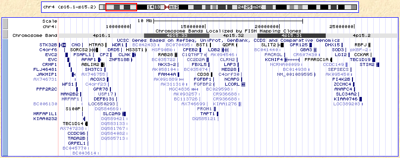
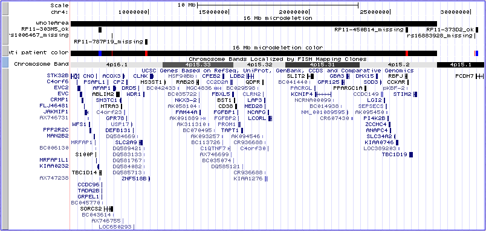
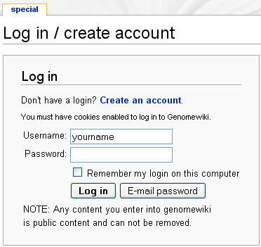

|
This session will focus on how to make custom tracks in the Genome Browser
and save/share the information with colleagues. We will start with some
information from a clinical report of microdeletions in a patient.
- Open a Genome Browser in a separate window by visiting
genome.ucsc.edu.
If you are using a windows-based computer, you can toggle back and forth between this
page the browser window page using Alt-Tab. On a Mac: use Command (apple)-backtick
(cmd-`).
- Click the Genome Browser link in either the top bar or the left bar.
- In case you have used the browser before, let's all start at the same place.
Click: Click here to reset the browser user interface settings to their
defaults.
- Use the assembly pulldown to select the Mar 2006 human assembly (hg18).
- Hit the Submit button to go to the hg18 browser.
- Here is a Clinical Report
from a microarray test on a patient, which we will use in this exercise.
We will investigate this report to see what we can learn about candidate genes
in the region of microdeletion.
- Back at the Browser window, turn off all tracks using Hide All button.
- Beneath the now blank image, find the UCSC Genes track in the Gene and Gene
Prediction track group. Use the pull-down to set this track
to pack. Hit any of the refresh buttons.
- Type (or copy/paste from here) 4p16.1;4p15.2 into the
position/search box. If you copy/paste the 4p16.1-4p15.2 directly
from the report, you must change the hyphen to a semicolon.
The Gateway page gives examples of this and other search
terms that work.
Hit the jump button. (22.7 Mb). This turns on the Chromosome Band
track automatically.
This is quite a bit larger than the "up to 16.3 Mb" in the report,
but it gets us in the right region.
- Let's get started building a Custom Track with information as we
gather it. Open up a window using some bland text editor (MS Word would be
ok in a pinch). Now copy/paste the chromosome location from the
position/search
box into your editor and edit away the commas, colon and hyphen and add a
name for this item (wholeArea) like so:
chr4 5200001 27900000 wholeArea
- Let's clean up the image a bit. There are many genes and as we are not
right now interested in how many splice variants there are, we want to
get a cleaner idea of what may be relevant.
Click the blue or gray mini-button to the left of the UCSC Genes track.
This will take you to the track configure page.
- Unclick the splice variants checkbox. Press submit.
One variant per gene un-clutters the screen.
- And at this resolution, we can collapse the ChromBands track.
Click on the gray mini-button to the left (track configure page).
- Use the pull-down menu to select dense. Submit.
At this point, your browser should look like this:

If it doesn't, you can click
here to catch up.
- Let's get the mapping information for the two BAC clones that are
missing in this patient. Copy/Paste from here or the report:
RP11-787P19 into the position box. Press jump.
- Now we have coordinates for one missing clone. Copy them from the
position box to your list for a Custom Track and edit as before:
chr4 9792282 9961004 RP11-787P19_missing
- Repeat for RP11-450B14:
chr4 25950045 26117117 RP11-450B14_missing
- Doing the same thing for the clones not deleted yields:
chr4 30307071 30462078 RP11-373D2_ok
chr4 6927542 7114042 RP11-303M5_ok
- Now that we're done with the BAC End Pairs track, let's turn it off.
Set it to hide using the track controls under the graphic or via
the mini-button.
- To get information about the SNPs listed in the report, simply type
into the Position box: rs1006467. This SNP shows up in a lot of
tracks, but take the latest release from dbSNP (130) and follow that
link.
Notice that the browser pads the 1 bp item by 250 bp one each
side for context.
- Repeat for rs16883928
- Now we have two more items for our custom track, giving us:
chr4 5200001 27900000 wholeArea
chr4 9792282 9961004 RP11-787P19_missing
chr4 25950045 26117117 RP11-450B14_missing
chr4 30307071 30462078 RP11-373D2_ok
chr4 6927542 7114042 RP11-303M5_ok
chr4 7738302 7738802 rs1006467_missing
chr4 30256030 30256530 rs16883928_missing
- Turn off the SNP track as before (set to hide with the pull-down),
as it is a very large table (18 million rows) and there is no need to query it.
- To visualize all of this at once, we will copy/paste our hard-won
coordinate data into the Custom Track utility on the Browser.
Click add custom tracks below the Browser image.
- Paste the track lines from above into the upper large box.
- Paste the following line above the data:
track name="Cincinnati patient" description="16 Mb microdeletion" visibility=pack
- Paste the information from the report into the lower box (this box is
interpreted as HTML, so we've added tags to separate the two
sections):
arr cgh 4p16.1p15.2 (RP11-787P19 -> RP11-450B14)x1
<BR>
arr 4p16.1p15.2 (rs1006467 -> rs16883928)x1=20
<P>
Consistent with a deletion (loss) involving chromosome 4p of up to
16.325 Mb of DNA involving 16 clones localizing to chromosome 4p16.1-4p15.2.
The proximal (centromeric) breakpoint has been mapped to within approximately
4.19 Mb as clone RP11-373D2 is not deleted, and the distal (telomeric)
breakpoint has been mapped to within approximately 2.678 Mb as clone
RP11-303M5 is not deleted.
- Now press submit.
- You will see the list of all your Custom Tracks (only one at the moment).
Click either the link in the Pos column (useful if there is more than one
track in list) or the go to genome browser button. The Browser
automatically displays the first record in the track.
- Now zoom out 1.5x to see that one of the clones in the report is actually
outside the region listed by chrom band.
- Use the drag-n-zoom feature to narrow the region to just those in the
track.
Position your mouse near the 5,000,000 base position at the top of the
image just to left of the wholeArea annotation. Click and hold, then
drag to the right until it is beyond the right-most BAC in your custom
track.
Note that both the coordinates in the Postion box and the size of
the region change as you drag.
Release the mouse.
- Click on the mini-button to the left of your Custom Track to see the
details page.
Notice that you also now have a track control below the image for your new track.
At this point, your browser should look like this:

If it doesn't, you can click
here to catch up.
- To get fancier still, the 9th field in this kind of file (known as BED,
for Browser Extensible Data) can be used to color the annotations. You must
set the itemRgb variable to on. The 6th field is the strand and must
be either + or -. To spare our colorblind friends, we've used red (255,0,0)
for a single-copy probe and blue (0,0,255) for a diploid.
track name="Cincinnati patient color" description="16 Mb microdeletion color" visibility=dense itemRgb=on
chr4 5200001 27900000 wholeArea 0 + 0 0 0
chr4 9792282 9961004 RP11-787P19_missing 0 + 0 0 255,0,0
chr4 25950045 26117117 RP11-450B14_missing 0 + 0 0 255,0,0
chr4 30307071 30462078 RP11-373D2_ok 0 + 0 0 0,0,255
chr4 6927542 7114042 RP11-303M5_ok 0 + 0 0 0,0,255
chr4 7738302 7738802 rs1006467_missing 0 + 0 0 255,0,0
chr4 30256030 30256530 rs16883928_missing 0 + 0 0 255,0,0
Note that with the track set to visibility=dense, the resulting image shows
one bar for this patient, with markers missing from this sample in red
and those present in this patient in blue. You may need to creep the
right side of the image a little to pick up some items off-screen. Use the
small arrows under the image labeled "move end" until the items appear.
At this point, your browser should look something like this:

If it doesn't, you can click
here to catch up.
Full details for a host of variations on Custom Tracks can be found in
the help pages.
Table Browser
- Let's go to the Table Browser and get a list of these genes.
To set up your query you should know the name of the table.
Before leaving the Genome Browser, hold your mouse over the
title bar of the UCSC Genes track, where it says:
UCSC Genes Based on RefSeq...
Notice that at the bottom of your Web Browser, you can see the link
that you would go to it you clicked here. The tableName is at the end
of the URL: ....knownGene=pack. That tells you what table you want to
work with in the Table Browser.
- The Table Browser is a full-featured interface to the tables
that underly the Genome Browser.
Click the Tables link in the blue bar at the top of the page
above the graphic.
- Notice that the coordinates from the Genome Browser session are inherited
by the table browser.
Click the button next to "position". (If you don't, you will query the
entire genome and everyone in the room will be waiting for your slow query to
finish.)
Notice that even your Custom Track is searchable in the Table Browser.
- To set up your query, it is helpful to know the track group of your table
(knownGene is in the Genes and Gene Prediction Tracks group).
You can always look through the 1000s of tables by choosing
All Tables in the pulldown. If you try this,
click on the table pull-down and type, kn, to get to the
right section
of the alphabet. If you selected the Genes and Gene Prediction Tracks group,
knownGene is the default table.
- Leave everything as it is except, for output format:, select
selected fields from primary and related tables
Click the get output button.
- You get a page displaying the fields for knownGene and the closely related
table, kgXref (and many other linked tables below that).
Check name in the knownGene section and geneSymbol and
description in the hgXref section.
You might also be interested in chrom, txStart and txEnd in the knownGene
table, but we won't select them right now.
Click the get output button in the middle of the page.
- The result is a list of the genes and their descriptions for all the genes
in the region of the 16 Mb microdeletion. Note that the multiple isoforms
result in many gene symbols and descriptions being repeated.
- The top of your output should look something like this (right-click to
view full-size):

Saving/Sharing Sessions
- Click your browser's back button twice to get back to the
Table Browser.
- To create a browser Session that you can save and share with others,
press Session in the top blue bar. This takes a snapshot of your
Browser image and preferences (including any Custom Tracks) and saves it.
You can share the exact session with colleagues. This is how the
links in this workshop were created.
- If you don't already have a login to our
genomewiki
page, you'll need to create one now.
Click the link to create a login or to sign in:
The sign-in page is handled by our wiki system:
click here to sign in

- Back at the Session page, enter a session name in the box:
Save current settings as named session
Use the Browser link to return
to your Session in the Genome Browser. Or use the Email link to
send a permanent link to a colleague.
|
|